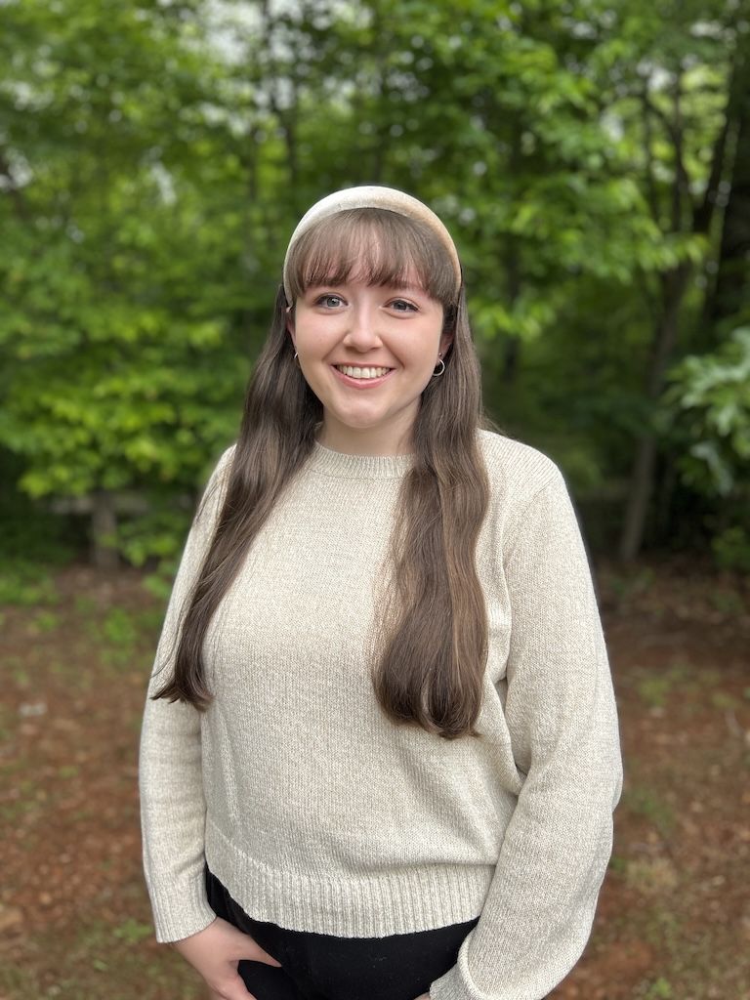

Hannah Ayers
Teen Services Library Assistant at Franklin County Public Library

Education
Wayne State University
Detroit, Michigan
Expected Graduation: August 2026
Master of Library and Infromation Science with a Graduate Certificate in Public Library Services to Children and Young Adults
GPA: 4.0
Hollins University
Roanoke, Virginia
Graduation: May 2023
Bachelor of the Arts in English with a Creative Writing Discipline and Film Minor
GPA: 3.90
Honors: Deans list for all seven semesters, Hollins Presidental Scholar, Member of Sigma Tau Delta English Honor Society, 1st Class Honors
CAPA, the Global Education Center
London, UK
January 2022 - April 2022
Honors: Academic Awards for Theatre in the City and Shakespeare and London courses
Work Experience
Franklin County Public Library
Franklin County, Virginia
October 30, 2023 - Present
Teen Services Senior Library Assistant March 2024 - Present
- Planned and executed programming for teens ages 12 to 17
- Maintained the Teen Room, including managing seasonal decorations, displays, and passive programming
- Selected young adult books for a teenage audience
- Performed circulation tasks while assisting with other youth services programs
Library Aide October 2023 - March 2024
- Performed circulation tasks such as charging and discharging materials, issuing library cards, and paying fees in Book Systems
- Aided library patrons, including children, in finding materials, placing holds, and answering general questions
- Maintained an organized workplace through shelving materials, shelf reading, and cleaning up after patrons
- Assisted in preparing decorations and crafts to ensure the library was welcoming and engaging
Virginia Western Community College
Roanoke, Virginia
August 3, 2023 - October 25, 2023
Bookstore Sales Associate
- Accurately operated the register to ensure efficient checkout and return of both digital and physical products
- Assisted patrons in navigating bookstore website and finding materials in the store
- Collected student information for emailing digital books and updating rental accounts
White House Historical Association
Washington D.C.
January 3 - January 27, 2023
Publishing Intern
- Conducted photo research using physical and digital sources to find images for The White House History Quarterly and upcoming books
- Proofread articles using the house style sheet to improve grammar and clarity
- Created an outline for a future publication using past publications and additional online research
- Assisted in filing, updating records, and mailing to maintain a more efficient workplace
Roanoke Higher Education Center
Roanoke, Virginia
June 2,2022 - August 25, 2022
Library Assistant
- Checked in, checked out, and shelved books according to the Library of Congress system to ensure patrons had access to print materials
- Assisted patrons in using technology such as printing, connecting to computers, using online databases, lamination, and faxing
- Followed opening and closure procedures without supervision
- Assisted other offices with administrative duties including mailing, updating records, and program planning
- Collected payments for overdue fees and use of library technologies
Wynham Robertson Library
Roanoke, Virginia
September 4, 2019 - December 10, 2022
Library Aide
- Assisted students with research needs using online databases and catalogues as well as with finding titles on the library floor and using library technology
- Checked and shelved books according to the Library of Congress system regularly to ensure students had access to titles
- Collaborated with peers to complete hourly tasks to maintain an orderly and efficient library environment for patrons